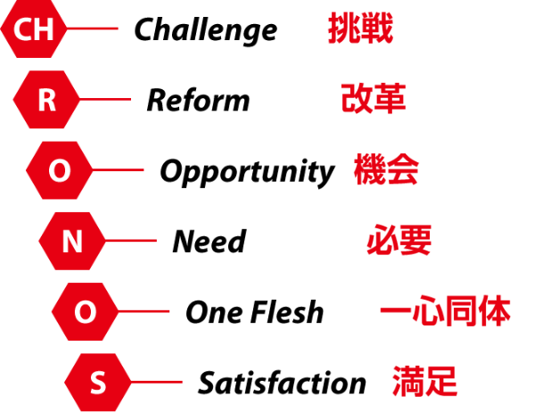
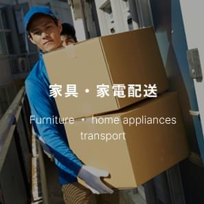
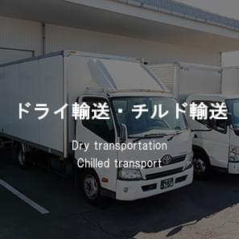
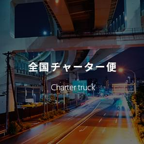
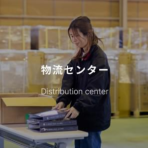
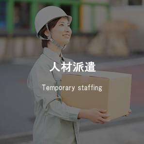
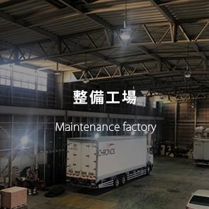
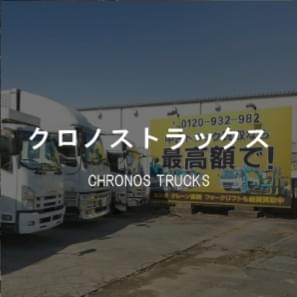

社名の由来

常に挑戦、改革を繰り返し、訪れる機会に感謝をしながら
関わる人たちから必要とされるように、
我が社のスタッフは一心同体となり皆が満足できる会社であり続ける
クロノスの事業
物流サービスを主とした各種事業を行っております。2t、4t、10tのトラックから、軽宅配サービス車両まで各種取り揃えております。近距離から遠距離まで幅広く対応することができます。一般の方からの引っ越しのお問い合わせや、企業様からの物流のご相談まで、運送のことでしたらお気軽にお問い合わせください。品質の高い物流サービスをお客様にご提供いたします。
-
 -
-
 -
 -
 -
 -
 -

営業拠点
一宮北営業所（愛運輸第1601号）
| 住所 | 〒491-0024 愛知県一宮市富士4-4-20[GoogleMAP] |
|---|---|
| TEL | 0586-24-9601 |
| FAX | 0586-24-9603 |
| 駐車場 | あり |
一宮営業所
| 住所 | 〒491-0871 愛知県一宮市浅野字長池52[GoogleMAP] |
|---|---|
| TEL | 0586-59-9100 |
| FAX | 0586-59-9110 |
| 駐車場 | あり |
春日井営業所 （愛運輸第983号）
| 住所 | 〒487-0021 愛知県春日井市東新明町字西之宮477番地18号[GoogleMAP] |
|---|---|
| TEL | 0568-27-7655 |
| FAX | 0568-27-7666 |
| 駐車場 | あり |
曽川物流センター
| 住所 | 〒491-0201 愛知県一宮市奥町宮前72-1[GoogleMAP] |
|---|---|
| TEL | 0586-75-0910 |
| FAX | — |
| 駐車場 | あり |
小牧整備工場
| 住所 | 〒485-0003 愛知県小牧市久保一色字北浦1491-2[GoogleMAP] |
|---|---|
| TEL | 0568-39-5917 |
| FAX | 0568-39-5918 |
| 駐車場 | あり |
川島駐車場
| 住所 | 〒501-6023 岐阜県各務原市川島小網町1900-89 |
|---|---|
| TEL | 058-659-8010 |
| FAX | 058-659-8011 |
| 駐車場 | あり |
グループ会社
株式会社ネクサス（中運自貨第385号）
| 住所 | 〒487-0021 愛知県春日井市東神明町字西之宮477番18号 |
|---|---|
| TEL | 0568-27-7622 |
| FAX | 0568-27-7623 |
| 駐車場 | あり |
| 会社HP | http://nexus-corp.bz/ |
会社概要
| 会社名 | 株式会社クロノス |
|---|---|
| 資本金 | 1,000万円 |
| 代表取締役 | 堀江 諭 |
| 本社所在地 | 〒491-0871 愛知県一宮市浅野字長池51 |
| TEL | 0586-75-0910 |
| FAX | 0586-75-0911 |
| 会社設立 | 2016年7月1日 |
| 事業内容 | 一般貨物自動車運送事業 （中運自貨第354号） 貨物利用運送事業 貨物軽自動車運送事業 リサイクル事業 / 古物商(第542631806500号) 通販事業 整備工場(認証番号 : 愛第9986号) |
| 従業員数 | 122名(2020年10月1日 グループ含む) |
| 主要取引先 | 株式会社アイディブレイン、株式会社エフティケー、ジョーシンサービス株式会社、SGムービング株式会社、株式会社MATSUI EXPRESS MS、株式会社アルファライン、山岡産輸株式会社、有限会社エコロジーワールド、SGモータース株式会社 グループ会社 株式会社ネクサス |